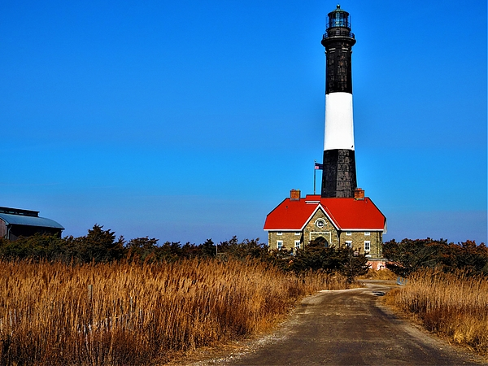
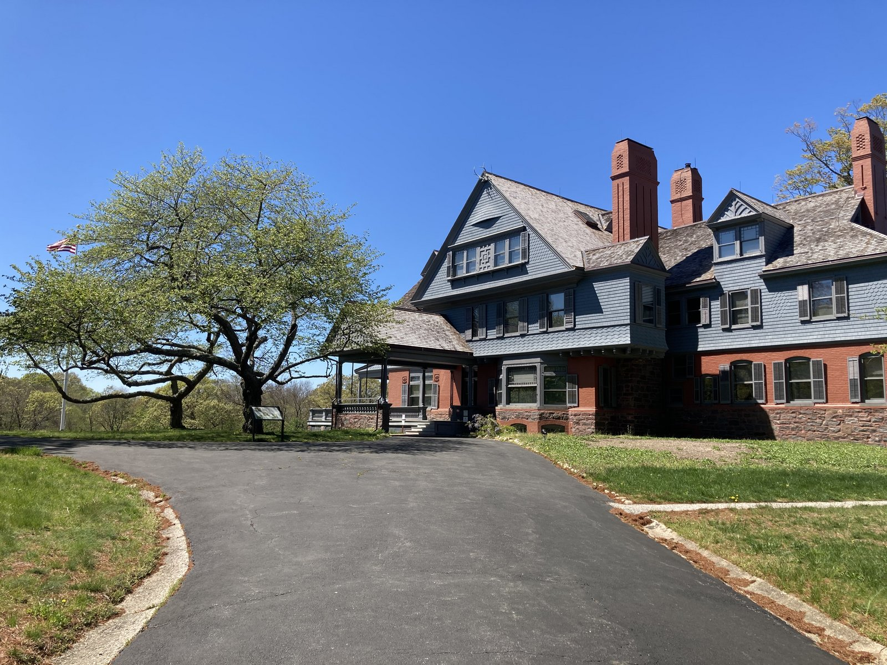
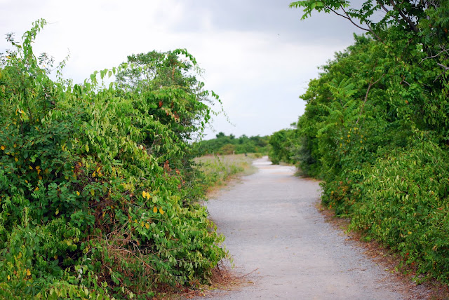
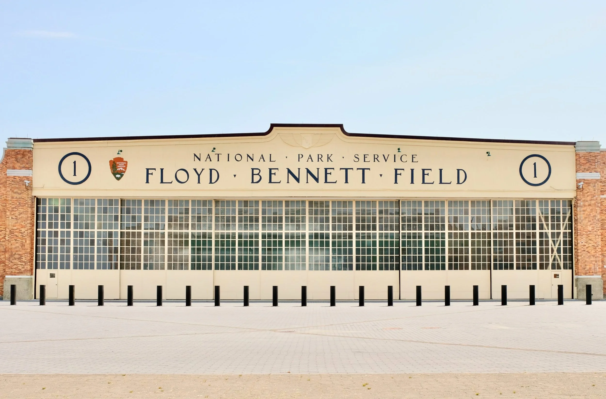
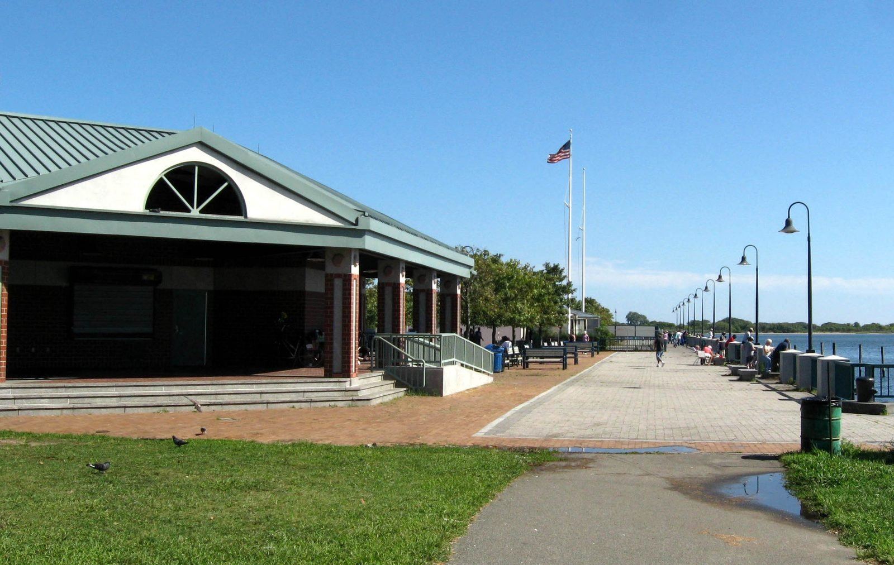
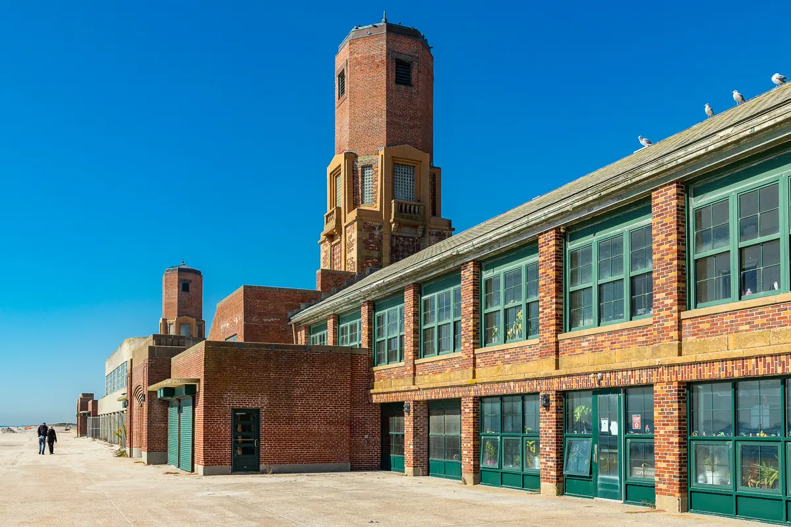
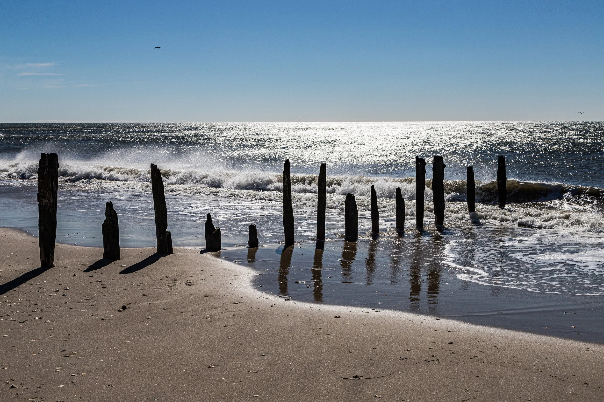

萨加莫尔山国家历史遗址
Sagamore Hill National Historic Site
第 26 任总统西奥多·罗斯福的家和「夏日白宫」。23 间房原样保存，园区免费；再走 0.7 英里小径到海湾边的小海滩。离法拉盛只有 45 分钟车程。

牙买加湾野生动物保护区
Jamaica Bay Wildlife Refuge · Gateway
大西洋候鸟迁徙线上的关键驿站，记录过 325 种以上的鸟。A 线地铁直达再走 10 分钟，是全纽约市最容易抵达的「野外」。

弗洛伊德·贝内特机场
Floyd Bennett Field · Gateway
纽约市第一座市立机场（1931 年），如今在老跑道上骑车、看修复中的古董飞机。1,300 英亩，地广人稀——「那里只有空间」。




罗伯特·摩西州立公园
Robert Moses State Park
近 5 英里大西洋海岸线；Field 5 是去火岛灯塔和 Kismet、Saltaire 小镇的陆路入口——公园是州立的，灯塔是 NPS 的，别搞混。
$8–$10/车
看详细介绍 →


阿姆斯特丹海滩州立公园
Amsterdam Beach State Park
199 英亩未开发大西洋岸线，当地称 Montauk Moorlands，主打原生栖息地保护，无设施。
免费
看详细介绍 →


考姆塞特州立历史公园保护区
Caumsett State Historic Park Preserve
北岸半岛上的前黄金海岸庄园，林地、草甸、岩石海岸、盐沼多样地貌，8 英里以上步道。
$8/车
看详细介绍 →


康内特quot河州立公园保护区
Connetquot River State Park Preserve
纽约州第一个'州立公园保护区'，3,473 英亩松林荒原、湿地与冷水河，飞钓圣地；50 英里步道。
$8/车
看详细介绍 →


卡莱布·史密斯州立公园保护区
Caleb Smith State Park Preserve
长岛四个州立自然保护区之一，543 英亩未开发湿地溪流林地，非常安静；禁野餐、禁自行车、禁宠物。
$8/车
看详细介绍 →


巴亚德·卡廷植物园州立公园
Bayard Cutting Arboretum State Park
黄金海岸庄园旧址，1886 年都铎式庄园 + 大丽花园，是长岛赏秋与拍婚纱照的热门地。
$8/车
看详细介绍 →


雪莉·奇泽姆州立公园
Shirley Chisholm State Park
纽约市最大的州立公园（407 英亩），建于旧垃圾填埋场之上、高出海平面 130 英尺，可眺望帝国大厦、Verrazano 大桥与牙买加湾全景。
免费
看详细介绍 →


克里斯托弗·莫利公园
Christopher Morley Park
98 英亩北岸丘陵林地公园，四季项目全：夏天泳池、冬天溜冰，还有作家 Christopher Morley 故居小木屋。
以官网为准
看详细介绍 →


塔卡波沙博物馆与保护区
Tackapausha Museum and Preserve
1938 年县收购的第一块保护区土地，南岸最受欢迎的保护区之一：5 英里步道穿过大西洋白雪松林，亲子自然教育首选。
以官网为准
看详细介绍 →


加维斯角博物馆与保护区
Garvies Point Museum and Preserve
北岸地质 + 原住民文化主题博物馆，步道可下到 Hempstead Harbor 海边，亲子研学好去处。
博物馆 $5
看详细介绍 →


西尔斯-贝洛斯县立公园
Sears Bellows County Park
979 英亩松林荒原，Bellows Pond 与 Sears Pond 两个淡水塘；步道系统连接 Paumanok Path；附近就是地标'大鸭子'（Big Duck）。
居民 $7 / 非居民 $15
看详细介绍 →


一张表看全
对比
| 地点 | 收费 | 徒步 | 骑行 | 烧烤 | 交通 | 评分 |
|---|---|---|---|---|---|---|
| 火岛国家海岸 | 免费入园 | 徒步 · 极佳 | 骑行 · 可以 | 烧烤 · 指定区炭炉 | 萨福克县 | ★ 4.8 |
| 萨加莫尔山国家历史遗址 | 园区免费 | 徒步 · 短环线 | 骑行 · 基本不行 | 烧烤 · 无炉子 | 拿骚县 · Oyster Bay | ★ 4.9 |
| 牙买加湾野生动物保护区 | 免费 | 徒步 · 平坦好走 | 骑行 · 步道禁骑 | 烧烤 · 无炉子 | 皇后区 · Broad Channel | ★ 4.6 |
| 弗洛伊德·贝内特机场 | 免费 | 徒步 · 开阔 | 骑行 · 极佳 | 烧烤 · 野餐区 | 布鲁克林 · Flatbush Ave | ★ 4.2 |
| 卡纳西码头 | 免费 | 徒步 · 短步道 | 骑行 · 附近绿道 | 烧烤 · 免费炉子免许可 | 布鲁克林 · Belt Pkwy 13 号出口 | ★ 4.2 |
| 雅各布·里斯公园 | 免费入园 | 徒步 · 海滩散步 | 骑行 · 木板路车道 | 烧烤 · 仅野餐桌 | 皇后区 · Rockaway | ★ 4.7 |
| 蒂尔登堡 | 免费 | 徒步 · 沙丘野径 | 骑行 · 园内道路 | 烧烤 · 凉亭需预约 | 皇后区 · Rockaway / Breezy Point | — |
| 罗伯特·摩西州立公园 | $8–$10/车 | 徒步 | — | 烧烤 | LIRR + SCT 15 路 | — |
| 沉没草甸州立公园 | $8–$10/车 | 徒步 | 骑行 | — | 建议自驾 | — |
| 赫克歇州立公园 | $8–$10/车 | 徒步 | 骑行 | — | 建议自驾 | — |
| 希瑟山州立公园 | $10/车 | 徒步 | — | — | 建议自驾 | — |
| 蒙托克角州立公园 | $8/车 | 徒步 | — | — | LIRR + 打车 | — |
| 奥赖恩特海滩州立公园 | $8–$10/车 | 徒步 | 骑行 | — | 建议自驾 | — |
| 野木州立公园 | $8–$10/车 | 徒步 | — | 烧烤 | 建议自驾 | — |
| 沙德穆尔州立公园 | 免费 | 徒步 · 2.3 英里环线 | — | — | 建议自驾 | — |
| 阿姆斯特丹海滩州立公园 | 免费 | 徒步 | — | — | 建议自驾 | — |
| 吉尔戈州立公园 | 以官网为准 | 徒步 | — | — | 开车 | — |
| 考姆塞特州立历史公园保护区 | $8/车 | 徒步 | 骑行 | — | 建议自驾 | — |
| 贝思佩奇州立公园 | $8/车 | 徒步 | 骑行 | — | 建议自驾 | — |
| 贝尔蒙特湖州立公园 | $8/车 | 徒步 | 骑行 | 烧烤 | 建议自驾 | — |
| 谷溪州立公园 | $8/车 | 徒步 | — | 烧烤 | 开车；LIRR 可达 | — |
| 亨普斯特德湖州立公园 | $8/车 | 徒步 | 骑行 | — | 建议自驾 | — |
| 康内特quot河州立公园保护区 | $8/车 | 徒步 | — | — | 建议自驾 | — |
| 尼斯阔格河州立公园 | $8/车 | 徒步 | — | — | 建议自驾 | — |
| 卡莱布·史密斯州立公园保护区 | $8/车 | 徒步 | — | — | LIRR 可达 | — |
| 坎普希罗州立公园 | $8/车 | 徒步 | 骑行 | — | 建议自驾 | — |
| 哈洛克州立公园保护区 | $8/车 | 徒步 | — | — | 建议自驾 | — |
| 冷泉港州立公园 | 免费 | 徒步 · 爬坡 | — | — | 建议自驾 | — |
| 步道观景州立公园 | 免费 | 徒步 | 骑行 | — | 建议自驾 | — |
| 布鲁克黑文州立公园 | 免费 | 徒步 | — | — | 建议自驾 | — |
| 纳佩格州立公园 | 免费 | 徒步 | — | — | 建议自驾 | — |
| 希瑟伍兹州立公园 | 以官网为准 | 徒步 | — | — | 建议自驾 | — |
| 巴亚德·卡廷植物园州立公园 | $8/车 | 徒步 | — | — | 建议自驾 | — |
| 种植园州立历史公园 | $8/车 | 徒步 | — | — | LIRR + 打车 | — |
| 雪莉·奇泽姆州立公园 | 免费 | 徒步 | 骑行 | — | 地铁 + 公交 | — |
| 艾森豪威尔公园 | 免费入园 | 徒步 · 健身步道 | — | — | 拿骚县 · East Meadow | — |
| 克里斯托弗·莫利公园 | 以官网为准 | 徒步 · 林间步道 | — | — | 拿骚县 · Roslyn | — |
| 桑兹角保护区 | $15/车 | 徒步 · 6 条步道 | — | — | 拿骚县 · Sands Point | — |
| 马顿镇保护区 | 以官网为准 | 徒步 · 多英里步道 | — | — | 拿骚县 · Syosset | — |
| 塔卡波沙博物馆与保护区 | 以官网为准 | 徒步 · 5 英里步道 | — | — | 拿骚县 · Seaford | — |
| 坎蒂亚格公园 | 免费入园 | 徒步 | — | — | 拿骚县 · Hicksville | — |
| 万塔公园 | 免费入园 | 徒步 · 滨水步道 | — | 烧烤 · 野餐区 | 拿骚县 · Wantagh | — |
| 考梅多公园 | 免费入园 | 徒步 · 自然步道 | — | — | 拿骚县 · Freeport | — |
| 加维斯角博物馆与保护区 | 博物馆 $5 | 徒步 · 5 英里步道 | — | — | 拿骚县 · Glen Cove | — |
| 北汉普斯特德海滩公园 | $10–$20/车 | 徒步 · 滨水步道 | — | 烧烤 · 野餐区带烤架 | North Hempstead 镇 · Port Washington | — |
| 布莱登堡县立公园 | 居民 $7 / 非居民 $15 | 徒步 · 5.7 英里环线 | — | — | 建议自驾 | — |
| 大教堂松林县立公园 | 居民 $7 / 非居民 $15 | 徒步 | 山地骑行 | — | 建议自驾 | — |
| 西丘县立公园 | 居民 $7 / 非居民 $15 | 徒步 | — | — | 建议自驾 | — |
| 加德纳县立公园 | 以官网为准 | 徒步 | — | — | 建议自驾 | — |
| 印第安岛县立公园 | 居民 $7 / 非居民 $15 | 徒步 | — | — | 建议自驾 | — |
| 西尔斯-贝洛斯县立公园 | 居民 $7 / 非居民 $15 | 徒步 | — | — | 建议自驾 | — |
| 索斯黑文县立公园 | 居民 $7 / 非居民 $15 | 徒步 | — | — | 建议自驾 | — |
| 莱克兰县立公园 | 以官网为准 | 徒步 | — | — | 建议自驾 | — |
| 蒙托克县立公园 | 居民 $7 / 非居民 $15 | 徒步 | — | — | 建议自驾 | — |
| 雪松角县立公园 | 居民 $7 / 非居民 $15 | 徒步 | — | — | 建议自驾 | — |
| 哈伯德县立公园 | 以官网为准 | 徒步 | — | — | 建议自驾 | — |
| 雷诺海滩县立公园 | 以官网为准 | 散步 | — | — | 建议自驾 | — |
| 迪奇平原海滩 | 停车需镇居民证 | 徒步 | — | — | 建议自驾 | — |